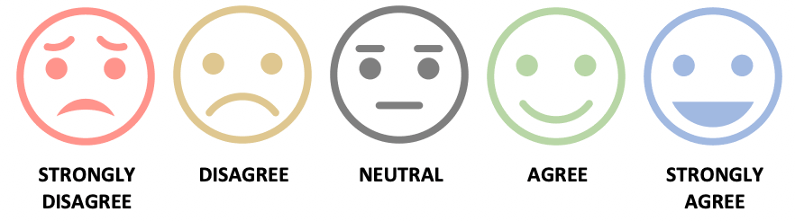
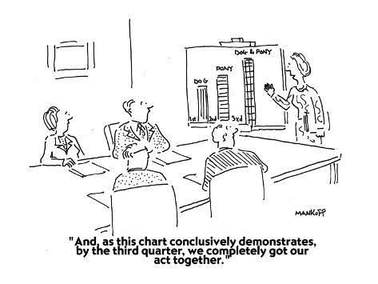

Research & Inquiry Skills: Interpreting,
|
Synthesizing, and Analyzing Research Once the research data has been collected, the next step in social science research is to interpret what it means and determine whether the original hypothesis was supported. This is done by interpreting, synthesizing, and analyzing the findings to formulate a research conclusion. Interpreting findings
An opportunity for the researcher to make sense of the research findings and situate it in relation to other findings or put it into perspective.
Interview data
Responses from a Likert scale can be converted into statistical information
Transforming interview questions into statistics provides quick and useful information in making assessment of the findings.  |
|
Analyzing research
It is important to note that correlation does not imply causation, meaning though there may be a relationship between the two variables, one does not necessarily cause the other. To prove whether one causes the other would need further investigation. Analyzing data using visual tools This is the use of graphs, charts, and other visual tools in presenting the data. Running statistical analysis provides a snapshot of the research. Graphs give a visual pattern of how data is dispersed and shows where most of the answers cluster. The measures of central tendency, such as mean, the median and mode, show how the data behaves. Computer programs make examining and manipulating data easier because of their built-in formulas and graphing functions. |
|
Synthesizing data  This is the process of bringing data together with the aim of drawing conclusions and seeing how the findings relate to past and other research studies. The Impact of Science and Technology on Society Science and technology is an interdisciplinary topic that encompasses science, technology, and their interactions with society. If we look at the history of science and technology, we will see how it has changed humanity over time. Science and technology continues to advance at a record pace, hence, understanding its role in society becomes increasingly important. This chapter examines the ways in which science and technology has impacted the everyday lives of Canadians. Health, Medicine, and Modern Technology The arrival of modern technology through scientific research has led to innovations in the field of health and medicine enhancing human life in the process. Encompassing the areas of biotechnology, pharmaceuticals, the development of medical devices and equipment, modern technology has contributed in improving people’s lives all over the world.
An example is the improvement in battery technology. Smaller batteries for hearing aids means a smaller unit that can discreetly fit into a person’s ear. |
|
The Impact of Science on Medical Research The advent of the Internet has far-reaching effects on medical research and practice. Research activities happen all over the world, all the time among visionary individuals. In the past, even if they were working on the same problems, results were not readily shared because they were often done in isolation. Sharing of data and information was unrealistic because of distance and time-lag problems. With the advancement in communication technology such as the Internet, research data, findings, and techniques can be shared worldwide in real time. It speeds up the process of problem solving.
In terms of practice, the Internet has also proven its usefulness for researchers to perform procedures like surgeries from remote locations. Far flung areas who have no ready access to specialized services could reap its benefits. |
|
The Effects of Modern Medicine on Life Expectancy
The discovery of penicillin by Sir Alexander Fleming in 1928 was one of the most significant discoveries in medical science. Due to its effectiveness in fighting infections, these groups of antibiotics drastically reduce the number of deaths and have a huge impact on mortality rates. As people live longer, they have come to require a new set of needs which society has to address including financial resources after retirement, housing, and health care. In 1931, life expectancy in Canada for men was 60 years and for women was 62 years. In 2016, Canada’s life expectancy was 82 years for both sexes, where men are at 79.9 years while women have a higher number of 84 years. Life expectancy at 65 is placed at 20.8 years for both sexes with men having 19.3 years while women have 22.1 years. It is said that improvement in life expectancy is due to a combination of factors which have had a positive impact on the lifespan of Canadians such as affordable medications, universal healthcare, and social programs that support families. |
The Mayo Clinic explains that infectious diseases are caused by microorganisms such as bacteria, fungi, viruses, and parasites. Microorganisms are commonly present in our bodies and most are harmless or even helpful. But there are circumstances when they become harmful and when they do, they could be passed from person to person, from insects, from other animals, from the environment in general or from contaminated food and water.
Multiple Choice